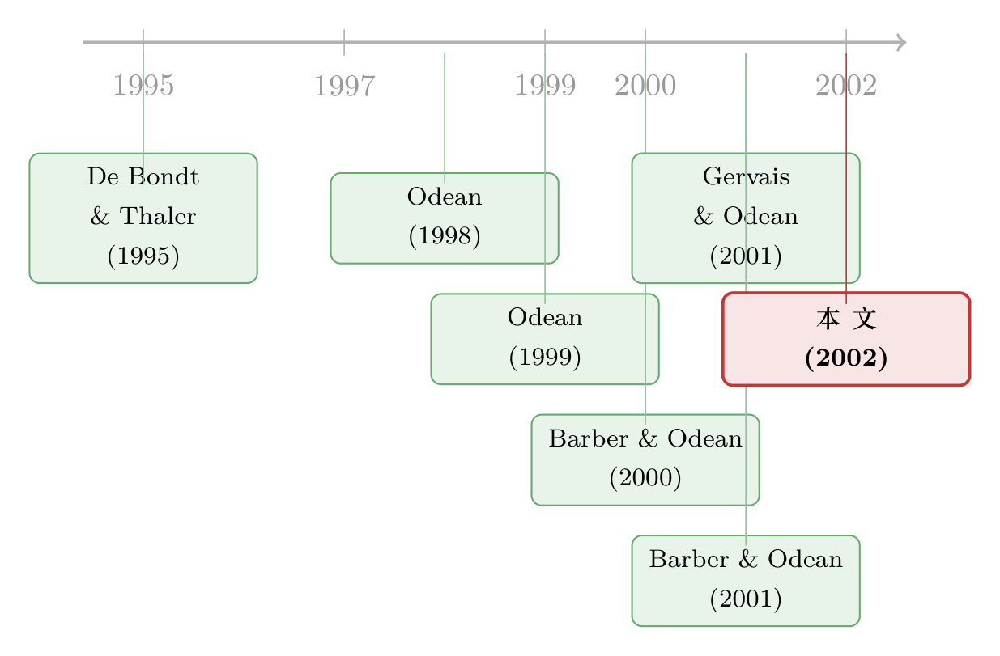

上了网之后，他们交易更勤，钱却越赚越少
本文读的是 Barber & Odean (2002, Review of Financial Studies)：1,607 名从电话下单转向网上交易的散户，在「上网」之前每年跑赢市场 2% 以上，可一旦把交易搬到网上，他们就交易得更频繁、更投机、也更亏——转而每年跑输市场 3% 以上。市场摩擦的下降解释不了这件事，真正的元凶是被自我归因、知识幻觉和控制幻觉一起喂大的过度自信。
1 一句广告语，和一个反直觉的问题
先从一句广告语说起。
「网上交易就像旧西部，」富达 (Fidelity) 这样吓唬你，「慢的人先死。」E*TRADE 接着补刀：「在家炒股？慢，会要你的命。」Ameritrade 那条著名的广告里，两个郊区辣妈晨跑回来，一个径直冲到电脑前，几下点击、一笔卖单之后，得意地宣布：「我想我刚刚赚了大约 1,700 块！」孩子们欢呼，旁边的朋友则懊恼地嘀咕：「我买的是共同基金。」
这些广告卖的是一种承诺：把交易搬上网，你就能又快、又准、又富。它们告诉你该期待什么（一夜暴富），也告诉你它们期待你做什么（频繁交易）。
可经济学的常识，偏偏在这里打了个结。一般来说，当一件商品降价，需求量上升，消费者福利也跟着上升——过去十年的个人电脑就是这样。但凡事有例外。 有些时候，降价带来的需求激增，对个人是一桩可疑的「好事」，对社会则是一笔净损失。作者举了个极端的例子：因为降价或更容易买到，香烟的消费上去了。
那么，把交易成本压下来、把下单速度提上去、把开户门槛降到几乎为零——这一连串「市场摩擦 (market frictions) 的下降」，对散户到底是福还是祸？
广告说：慢的人先死。这篇论文却想问一个更刁钻的反问：那些抢着上网、抢着「快」起来的人，后来过得怎么样？
2 一个干净的「前后对照」实验
要回答这个问题，作者手里握着一份在行为金融里堪称传奇的数据：一家大型折扣经纪商 78,000 个家庭、从 1991 年 1 月到 1996 年 12 月、长达六年的全部交易记录与月度持仓。关键在于，这套数据记录了每一笔交易是怎么下的——是打电话，还是用个人电脑敲进去的。
于是一个近乎完美的设计自然浮现。作者从中筛出 1,607 个家庭，他们满足三个条件：六年里每个月都持有股票；1992 年 1 月之前从未在网上交易过；并在 1992 年 1 月到 1995 年 12 月之间第一次完成了网上（即电脑发起的）交易。这群人，就是论文的主角——在线样本 (online sample)。
这个设计的妙处在于，它天然带着两层比较：
第一层是「自己跟自己比」。同一个人，上网之前 vs 上网之后。因为要求了整整六年的持仓，作者可以把每个人在「触网」那一刻劈成两半，看他的交易行为和业绩前后发生了什么变化。这是一个事件研究 (event study) 式的前后对照。
第二层是「跟别人比」。作者用了配对样本 (matched-pair) 设计：给每一个在线投资者，找一个账户规模（持有股票的市值）最接近、且六年里从未在网上交易过的家庭做对照。配对发生在在线投资者首次网上交易的前一个月。配对做得相当干净：在线组月末持股市值均值 $135,000、中位数 $45,400，对照组分别是 $132,000 和 $42,700，几乎贴在一起。
为什么要费力做规模配对？因为账户规模本身和交易行为、收益高度相关。把规模控制住，剩下的差异才更可能来自「上没上网」这件事本身。
接着，一个自然的问题是：会上网的，是一群什么样的人？
3 谁先抢着「快」起来
答案并不让人意外，却很重要。
从人口统计上看（论文表 1），相对于规模配对的对照组，在线投资者更可能是更年轻、收入更高、净值更高的男性：男性占比 85.7%（对照组 79.7%，全样本 77.2%），平均年龄 49.6 岁（对照组 53.1 岁），平均收入 $79,600（对照组 $74,900）。他们也更自信于自己的投资能力——79% 的在线投资者自报有「不错」或「丰富」的投资经验，而对照组只有 68%，全样本仅 63%。
这一幅画像——年轻、男性、高收入、自认有经验、偏爱高风险的小盘成长股、本来就是活跃交易者——几乎就是行为金融教科书里「过度自信 (overconfidence)」的标准长相。作者在另一篇姊妹论文里早就发现，更容易过度自信的男性，交易频率比女性高出近一半，净收益也因此被磨得更狠（Barber & Odean, 2001）。
但真正抓人眼球的，是这群人上网之前的业绩。
他们并不是一群韭菜。在转向网上交易之前，这 1,607 个家庭每年跑赢市场 2% 以上。也就是说，把交易搬上网的，恰恰是一批刚刚尝过甜头、风头正劲的「赢家」。
到这里，故事其实已经埋下了它最关键的伏笔。
4 反转：上网之后，赢家变成了输家
然后，反转出现了。
同样这群人，一旦把交易搬到网上，三件事同时发生：
- 交易更频繁了（换手率上升）；
- 交易更投机了（更偏好小盘股、高 beta 股、成长股）；
- 业绩更差了——从上网前每年跑赢市场 2% 以上，掉头变成每年跑输市场 3% 以上。
一个本来跑赢 2 个百分点的赢家，上网后变成跑输 3 个百分点的输家，一来一回，是 5 个百分点上下的业绩塌方。富达广告里那句「慢的人先死」，被数据狠狠地反过来打了一巴掌：抢着「快」起来的人，反而先倒下了。
注意这里的逻辑链条很要紧。「上网的人本来就更爱交易、更投机」——这只是选择偏误 (selection bias)，它能解释为什么在线投资者整体上比别人交易得凶，却解释不了为什么同一个人上网之后会比上网之前更差。前后对照里那个「变差」，才是这篇论文真正的杀手锏。
5 真正关键的一步：把「摩擦下降」这个嫌疑人排除掉
可是，业绩变差，难道不能有一个更朴素、更「理性」的解释吗？
最自然的怀疑是：上网之后交易成本（佣金、买卖价差）下降了，所以人们多交易，这是降价带来的正常需求上升；至于业绩，也许只是市场环境变了。换句话说——会不会是「市场摩擦下降」本身，而不是什么心理偏差，在驱动这一切？
这正是全文识别上最关键的一步：作者必须把「降低摩擦带来的理性反应」这个嫌疑人，从案发现场清走。
他们的论证是：如果只是交易变便宜了，理性投资者会多交易没错，但不会因此系统性地亏钱。降低成本、提高速度、方便下单，这些变化本身只会让市场更顺滑；它们不会让一个理性的人在扣除成本后还跑输市场 3%。一个理性的人只有在多交易能提高期望效用时才会多交易（Grossman & Stiglitz, 1980 的老道理）。可数据里看到的是：交易更多、业绩更差、且差到无法用成本节省来抵消。
「很难用理性行为来调和这些结果。」——作者几乎是把话挑明了说。
于是嫌疑人只剩下一个：过度自信。
6 为什么一上网，人就更自负了
到这一步，还差最后一环。选择偏误能说明「自负的人爱上网」，但论文真正新的命题是：上网这件事本身，会让人变得更自负。 作者给了三条相互叠加的心理机制。
其一，自我归因偏误 (self-attribution bias)。 人习惯把成功归于自己的本事，把失败推给运气或别人。前面说过，这群人上网前刚刚跑赢市场——一段「不寻常的好业绩」。问题是，这份成功很可能是运气，但自我归因让他们误以为是本事，于是信心爆棚。更妙的是，因为预期自己将来要更频繁地交易，上网的「一次性成本」可以摊到更多笔交易上，这些刚刚得意的人也就更有动力去上网（Gervais & Odean, 2001 的理论正是讲「成功如何把人教成过度自信」）。
其二，知识幻觉 (illusion of knowledge)。 当一个人掌握的信息越多，他预测的信心会比预测的准确度涨得快得多。网上券商把海量数据——实时报价、历史 K 线、实时新闻、盈利预测——一股脑塞给散户，eSignal 甚至打出广告：「你会赚更多，因为你知道更多。」可惜，数据多不等于知识多，散户拿到的往往只是知识的「微光」，而 Odean (1999) 早就发现，散户买入的股票一年后通常比他们卖出的还差约三个百分点——光靠这一点微光，是赚不到钱的。
其三，控制幻觉 (illusion of control)。 人会以为自己的「主动参与」能影响纯属偶然的结果。网上交易省掉了电话那头的经纪人，一切「亲力亲为」、鼠标一点即成——这种主动感，恰恰是滋生控制幻觉最肥沃的土壤。
三者叠加，再加上早年网上交易的选择偏误，作者把全文压成了六个可检验的假设（在线投资者上网后/相对电话投资者，交易更活跃、更投机、业绩更差），而数据一一应验。
（关于「赚过钱的人为什么更爱交易」这条过度自信的微观证据，可参见《赚过钱的人，更爱交易——一条藏在成交量里的「过度自信」》；而把炒股「搬上网」之后交易翻倍、收益却原地踏步的另一份证据，见《把炒股的「超市」搬到家门口：交易翻了一倍，钱却没多赚一分》。）
7 文献脉络
把这篇论文放回它所在的那条线上，脉络其实非常清晰。
最早的张力，来自 De Bondt & Thaler (1995) 那句著名的断言：交易所里高得离谱的成交量，是标准金融范式「最尴尬的一个事实」，而理解这个交易之谜的关键行为因子，就是过度自信。
接着，理论这一侧把过度自信写成了模型。Odean (1998b) 证明，过度自信的投资者会比理性投资者交易得更多，而且这么做会降低自己的平均效用；Gervais & Odean (2001) 则进一步刻画了「成功如何通过自我归因把人一步步教成过度自信」的动态过程。
然后，实证这一侧开始用同一套折扣经纪商数据「验尸」。Odean (1999) 发现散户「交易太多」、且买的不如卖的；Barber & Odean (2000) 在扣除交易成本后发现散户整体跑输基准、交易最凶的人输得最惨；Barber & Odean (2001) 又用性别把过度自信「具象化」——男性交易更凶、收益更低。

而本文（2002）所处的位置，是这条线上一个特别巧妙的「准实验」：它不再只是横截面地比较「爱交易 vs 不爱交易」的人，而是抓住「上网」这个外生的时点，用同一个人的前后对照，把过度自信「随环境增强」这件事第一次干净地照了出来。几乎同一时间，Choi, Laibson & Metrick 用 401(k) 计划里引入网络渠道的自然实验，独立地印证了「上网确实增加交易」这一结论。
8 评论与延伸（Q&A + 研究方向）
(a) 几个可能的疑问
Q：跑输 3% 这个数字，会不会只是因为这群人本来就偏好高风险、高 beta 的小盘成长股，遇上了那几年这类股票的坏运气？
这正是作者要小心处理的。他们报告的业绩是经过市场（乃至风格）调整后的，而且核心证据来自同一个人的前后变化，而非简单的原始收益。一个人的风险偏好不会在上网那一刻突变到能解释 5 个百分点的业绩翻转；更重要的是，业绩变差伴随着「交易频率上升」，这与过度自信的预测一致，而非单纯的风格暴露。
Q：会不会是「均值回归」——上网前业绩特别好，上网后只是回落到正常水平，跟心理偏差无关？
这是最值得警惕的另一种解释。作者在附注里专门做了稳健性检验：他们改用「上网前 12 个月毛收益最接近」来配对（而不是按规模配对），主结果几乎不变。这说明仅靠自我归因（即「赢了才上网、上网后自然回落」）解释不了全部——上网环境本身（知识幻觉、控制幻觉）也在推高交易、压低业绩。但坦白说，「纯均值回归」很难被彻底排除，这是识别上最软的一环。
Q：选择偏误和「上网使人更自负」，这两件事到底怎么区分？
关键在于比较的维度。选择偏误体现在横截面：上网的人本来就比别人更爱交易。而「上网使人更自负」体现在时间序列：同一个人上网后比上网前更糟。前者无法推出后者——这正是前后对照设计的价值所在。
Q：佣金不是大幅下降了吗？多交易难道不是对降价的理性反应？
佣金确实大降（顶部 10 家网上券商的平均佣金在 1996–1997 年间下挫约 70%）。但理性地对降价做出反应，只会让人在扣除成本后不亏钱地多交易；而数据里是扣除成本后还跑输 3%。降价能解释「交易更多」，解释不了「交易更多且更亏」。
Q：样本期是 1991–1996，那时的网上交易还很「原始」，结论放到今天还成立吗？
这是双刃剑。一方面，早年上网门槛高、被感知的风险大，因此最自负的人才会去尝试，选择偏误在那个年代格外强，结论可能被放大。另一方面，正因如此，这篇论文捕捉的是「技术普及早期」的特殊人群；随着上网成为默认选项，选择偏误会减弱，但知识幻觉和控制幻觉这类机制依然存在。结论的「方向」很可能稳健，「量级」则需要重新校准。
Q：这群人样本量只有 1,607，会不会以偏概全？
1,607 是经过严格筛选（六年连续持仓 + 明确的触网时点）后的「干净」样本，配对组同样严格。代价是外部有效性受限——能连续六年持股的，本身就是相对稳定、相对富裕的一群人。所以结论更适合理解「积极型散户」，而非全体投资者。
(b) 几个可能的研究问题与提案
1. 「触网效应」在公司债/信用市场的散户身上成立吗？ 【经济故事】股票市场的过度自信已被反复验证，但公司债市场长期是机构主导、场外交易、价格不透明。近年零售平台让散户更容易买卖公司债，「上网→更自负→更频繁、更亏」的链条是否会重演？信用市场的流动性更差，过度自信的代价可能更高。 【可行性】中。需要带「下单渠道」标记的零售债券交易数据（如某券商内部数据）配合 TRACE 成交价。识别可沿用本文的前后对照 + 规模配对。难点在于散户直接持有公司债的样本稀薄。
2. 移动端 vs 桌面端：控制幻觉会被「随时随地」进一步放大吗？ 【经济故事】本文的机制之一是控制幻觉，而手机把「随时一点即成交」推到了极致。从桌面交易迁移到手机交易，是否带来又一次交易频率上升、业绩下滑？这相当于给本文做一个「二阶」版本。 【可行性】高。许多券商有设备级别的下单标记，可精确识别用户从桌面转向移动端的时点，复刻本文事件研究设计。
3. 外资散户上网后，是否比本地散户更「自负地」交易？ 【经济故事】外资投资者通常被认为有信息劣势。如果上网放大了知识幻觉，外资散户可能误以为「数据多 = 信息平了」，从而更激进地交易、更亏。这能把行为金融与跨境投资两条线接上。 【可行性】中。需要带投资者国籍标记的某新兴市场零售交易数据。识别可比较外资 vs 本地散户的「触网前后」业绩差异的差异（DiD）。
4. 把「过度自信」从交易行为里结构化地估计出来。 【经济故事】现有文献多用「交易频率」作为过度自信的代理，但频率也受流动性需求、再平衡、税务等驱动。能否写一个带过度自信参数的投资者优化问题，用上网前后的换手率与业绩联合识别出这个参数的「跳变」？ 【可行性】低到中。理论上可行（沿 Odean 1998b 的效用框架），但把心理参数从观测行为中干净地识别出来，需要很强的结构假设，容易陷入「能解释一切、却证伪不了」的困境。
9 我的判断
这篇论文的贡献，不在于它「发现」了过度自信——那在它之前已是行为金融的共识——而在于它找到了一个近乎实验的切口：用「上网」这个外生时点，把「同一个人前后变化」和「跨人横截面差异」分开，从而把「环境如何放大心理偏差」这件难以识别的事，第一次照得清清楚楚。把选择偏误和「触网增强自负」拆开来看，是全文最漂亮的一笔。
识别上我最担心两点。其一是均值回归：上网前的「跑赢 2%」本身就异常，上网后的回落有多少是心理、有多少是统计上的回归，作者用毛收益配对做了缓解，但没能彻底关上这扇门。其二是外部有效性：样本是一批能连续六年持股的、相对富裕的积极型散户，处在网上交易的「蛮荒年代」，选择偏误格外强——结论的方向我信，量级我会打个折。
后续我最想看到的，是把这套「触网前后」的设计搬到移动端迁移和信用市场的零售化上去。如果手机让控制幻觉再上一个台阶、如果流动性更差的债市让过度自信的代价更痛，那么富达那句广告语就该被彻底改写：要命的从来不是「慢」，而是误以为自己「快」。
参考文献
Barber, B. M., and T. Odean (2002). Online Investors: Do the Slow Die First? Review of Financial Studies 15(2), 455–487.
Barber, B. M., and T. Odean (2000). Trading is Hazardous to Your Wealth: The Common Stock Investment Performance of Individual Investors. Journal of Finance 55, 773–806.
Barber, B. M., and T. Odean (2001). Boys will be Boys: Gender, Overconfidence, and Common Stock Investment. Quarterly Journal of Economics 116, 261–292.
Choi, J. J., D. Laibson, and A. Metrick (2001). Does the Internet Increase Trading? Evidence from Investor Behavior in 401(k) Plans. Journal of Financial Economics (forthcoming).
De Bondt, W., and R. Thaler (1995). Financial Decision-Making in Markets and Firms: A Behavioral Perspective. In Finance: Handbooks in Operations Research and Management Science, vol. 9, North-Holland.
Gervais, S., and T. Odean (2001). Learning to be Overconfident. Review of Financial Studies 14, 1–27.
Grossman, S. J., and J. E. Stiglitz (1980). On the Impossibility of Informationally Efficient Markets. American Economic Review 70, 393–408.
Odean, T. (1998b). Volume, Volatility, Price and Profit When all Trades are Above Average. Journal of Finance 53, 1887–1934.
Odean, T. (1999). Do Investors Trade too Much? American Economic Review 89, 1279–1298.